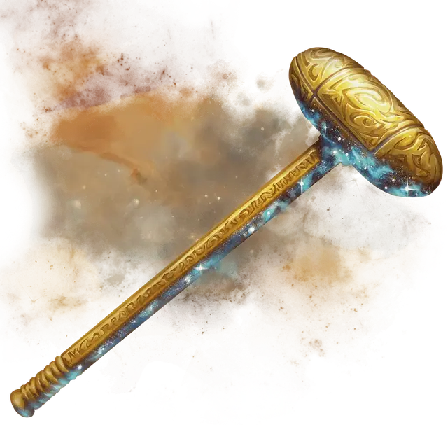

Акмон, молот Пирфора
Akmon, Hammer of Purphoros
Оружие (боевой молот), артефакт (требуется настройка)

Молот Пирфора творит чудеса и бедствия, бог кузни использует его для создания потрясающих чудес и опасных изобретений в равной мере. Пирфор редко дарует Акмон смертным, но иногда оставляет его без присмотра в своей кузнице на горе Вел. Если Пирфор позволяет смертному использовать молот, то обычно это делается для того, чтобы он мог выковать серьёзную работу, уничтожить деструктивную силу или выковать что-то замечательное там, где богу не рады.
Кузнечный молот. Этот магический боевой молот даёт бонус +3 к броскам атаки и урона, совершённым этим магическим оружием. Когда вы попадаете атакой с помощью этого молота, цель дополнительно получает 3к10 урона огнём.
Благословение кузницы. Если вы поклоняетесь Пирфору, то вы получаете все следующие преимущества, для которых у вас есть необходимое значение благоволения:
Благоволение 10+. Молот получает 1 случайно определяемое малое положительное свойство.
Благоволение 25+. Молот получает 1 случайно определяемое основное положительное свойство.
Благоволение 50+. Молот получает 1 дополнительное случайно определяемое основное положительное свойство.
Если вы не поклоняетесь Пирфору, то молот получает 2 случайно определённых малых отрицательных свойств.
Перекованный. Держа молот, вы получаете сопротивление урону огнём и невосприимчивы к истощению. Кроме того, вы получаете владение инструментами кузнеца и совершаете с преимуществом все проверки характеристик в которых используются инструменты кузнеца.
Заклинания. Пока молот находится у вас, вы можете действием наложить одно из следующих заклинаний (Сл спасброска 18): оживление вещей [animate objects], раскалённый металл [heat metal], изготовление [fabricate], магическое оружие [magic weapon], починка [mending], дребезги [shatter]. Как только вы используете молот, чтобы наложить заклинание, оно не может быть наложено с его помощью снова до следующего заката.
Уничтожение молота. Чтобы уничтожить молот, его нужно доставить в Тизерий, в Подземное царство. Там он должен быть покрыт глиной из Трясины Наказания. Глина застывает под жаром молота, приплавляясь к нему в течение месяца. После полного затвердевания покрытый глиной молот должен быть проглочен и переварен кракеном [kraken].